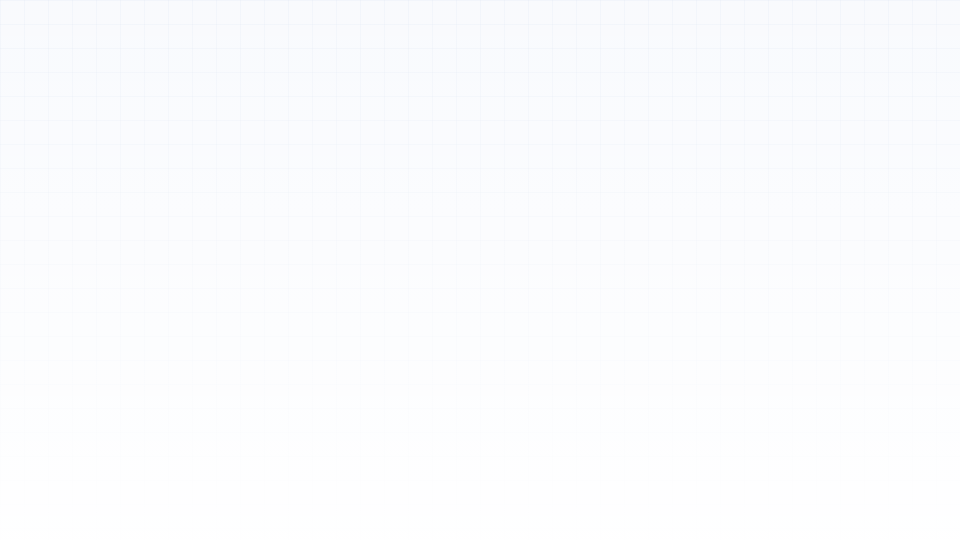
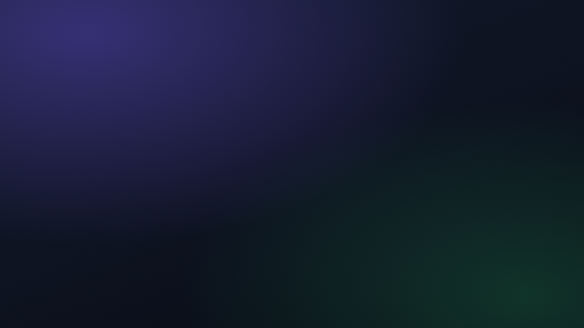
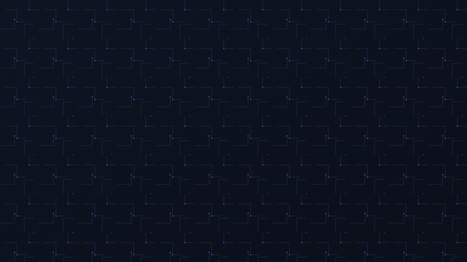
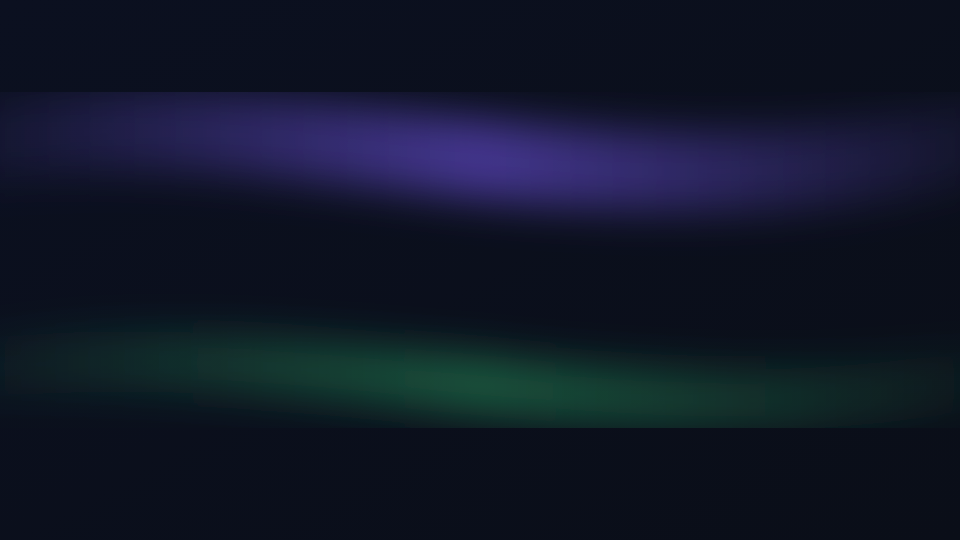
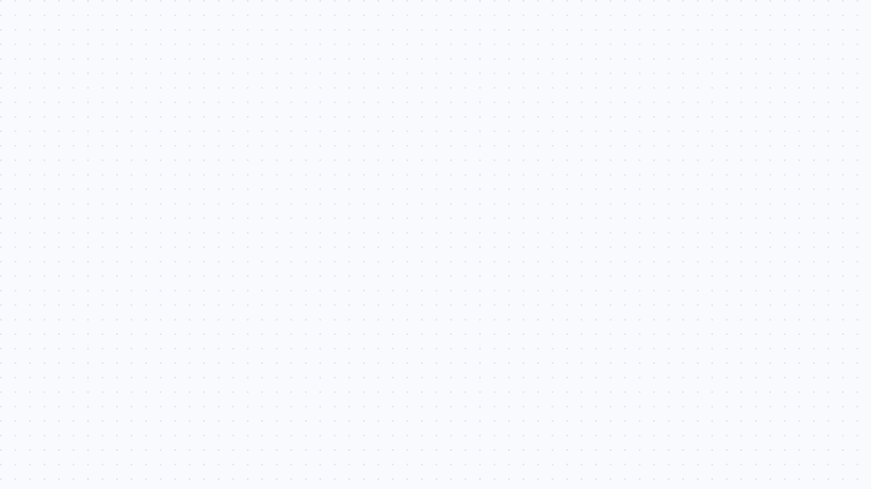
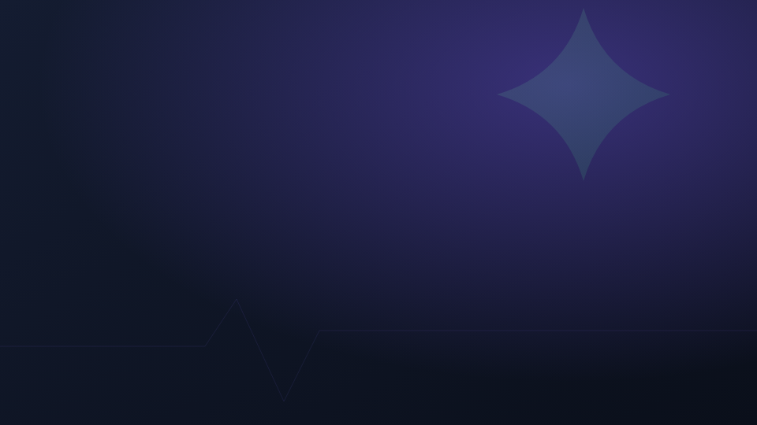

1C-AI-Control — фоны
8 вариантов: 4 светлых и 4 тёмных. Все SVG — масштабируются на любой экран, вес 3–15 КБ.
Светлый: мягкий градиент + пятна
панель, кабинет клиента — спокойный фон под таблицами
светлая тема
backgrounds/bg-1-light-soft.svg

Светлый: сетка
админка, формы — сетка помогает выравниванию
светлая тема
backgrounds/bg-2-light-grid.svg

Светлый: mesh-пятна
лендинг, презентация — «мягкий» маркетинговый фон
светлая тема
backgrounds/bg-3-light-mesh.svg

Тёмный: глубокий + свечение
тёмная тема интерфейса (по умолчанию в панели)
тёмная тема
backgrounds/bg-4-dark-deep.svg

Тёмный: схемы/плата
экран кластера, технические разделы
тёмная тема
backgrounds/bg-5-dark-circuit.svg

Тёмный: aurora-полосы
экран входа, hero-блок
тёмная тема
backgrounds/bg-6-dark-aurora.svg

Плитка: точки (tileable)
рабочая область со списками — минимальный шум
светлая тема
backgrounds/bg-7-tile-dots.svg

Экран входа: тёмный + искра
страница логина и первый экран панели
тёмная тема
backgrounds/bg-8-login-hero.svg
Что где применять
| Экран | Рекомендация |
|---|---|
| Экран входа | bg-8-login-hero (тёмный, искра) |
| Панель, светлая тема | bg-1-light-soft или bg-7-tile-dots |
| Панель, тёмная тема | bg-4-dark-deep (по умолчанию) |
| Админка, формы | bg-2-light-grid |
| Раздел «Кластер» | bg-5-dark-circuit |
| Лендинг, презентация | bg-3-light-mesh / bg-6-dark-aurora |
Фоны сделаны так, чтобы поверх них читался текст: светлые — приглушены к верху страницы,
тёмные — с мягким свечением по краям и без ярких пятен в центре, где обычно контент.